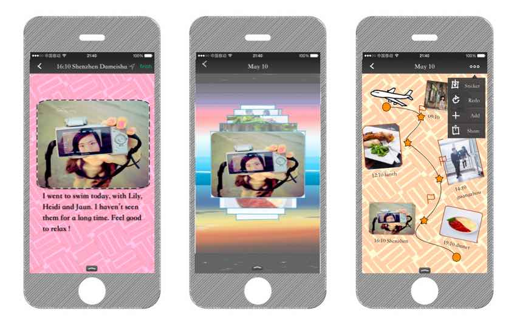
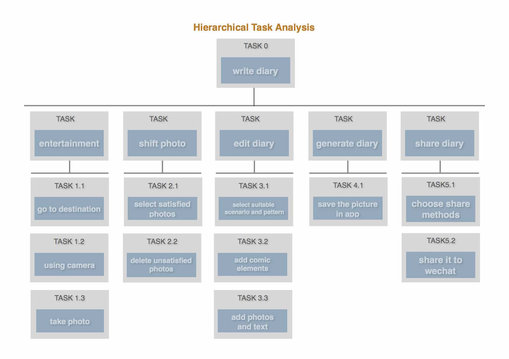
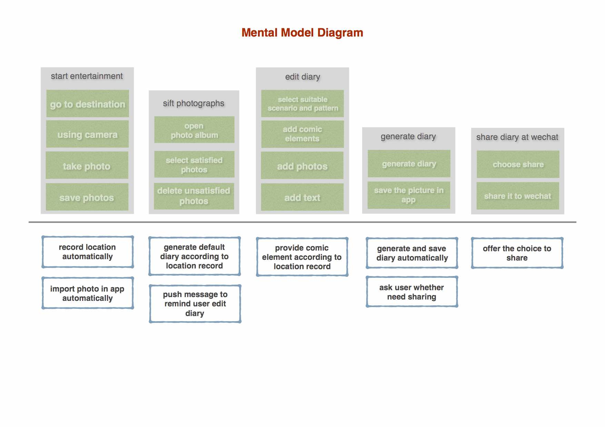

Class Project
2015/05 - 2015/06
Prototype Design
User Research
Problem
Common TO DO LIST APPs are tedious. They only note down the things people plan to do, but can not note down the things people have done. We need an APP to help us write down our happiness and emotion.
Solution
We delved deeply into case studies of existent projects, analyzing their problems on the basis of my acquired knowledge and starting to design a new APP to improve them.
Task Analyse
To understand the process of writing diary in cell phone , we analysed the procedure of a potential user's operation firstly.
User Research
Then, we investigated three individuals to generate user model. During the investigation we asked them to rank the importance of those tasks listed above.
There are three rank: low, med(medium), hi(high)
mental model
After getting details about potential user's opinions, we write mental model for the APP.
THE END
Crawler System Speech Recognition